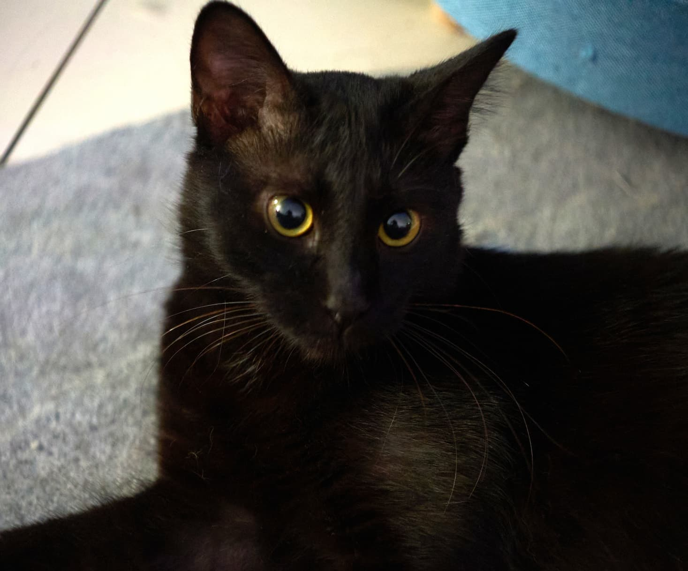

← 猫咪家族
中
EN
JP
黑

乌云衔金 · 神秘来客
黑珠仔
Hei Zhu Zai · The Dark Mirror
黑色土耳其安哥拉（推测）· 雨夜来客 · 玄猫之道第六猫
故事正在发生中
黑珠仔刚刚到来。
他的故事还没写完——
因为它还在发生。
雨夜降临，乌云衔金。
傻猪的黑色镜像，64的另一半。
一黑一白，阴阳闭环。
✦ 新玄猫加入中...
🌧
降临
2025年，雨夜精准降落门前。身型、长毛、眼神与傻猪流浪时如出一辙。一黑一白，互为镜像。
✨
乌云衔金
纯黑的底色下，嘴角长着几根金色的猫胡须。相猫经称「乌云衔金」，宛如自带的高频雷达天线。
6️⃣4️⃣
64锁定
绝育日期：6月4日。新家门牌：64号。易经：六十四卦。时间、空间、符号，三重64完全对齐。
认识傻猪 · 他的镜像
回到猫咪家族